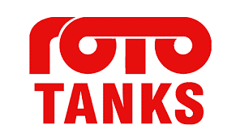
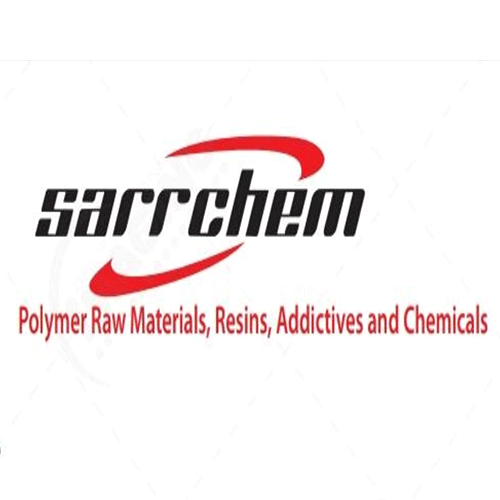
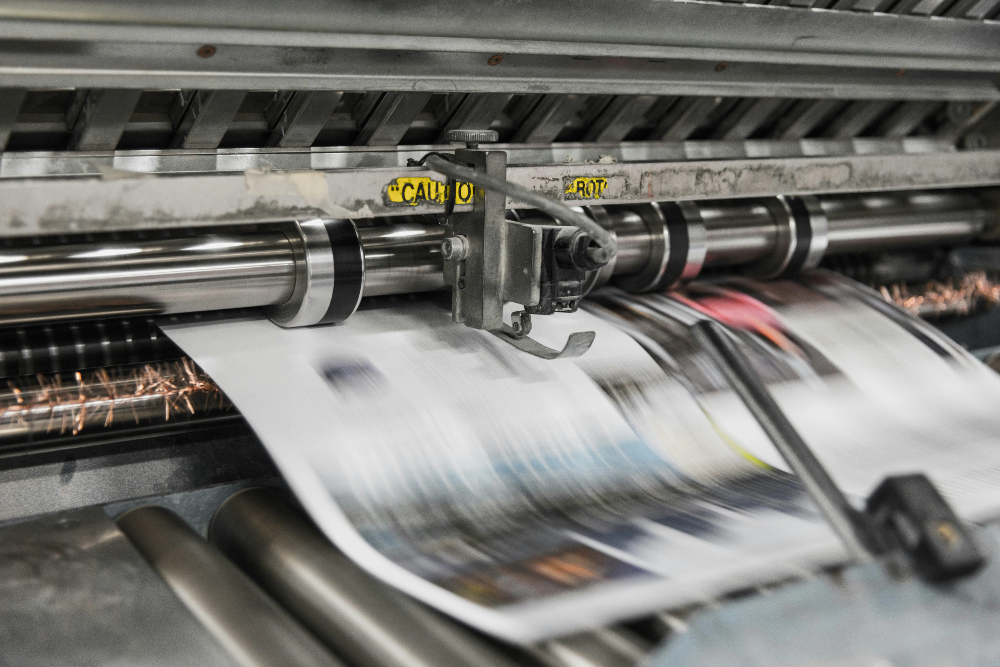
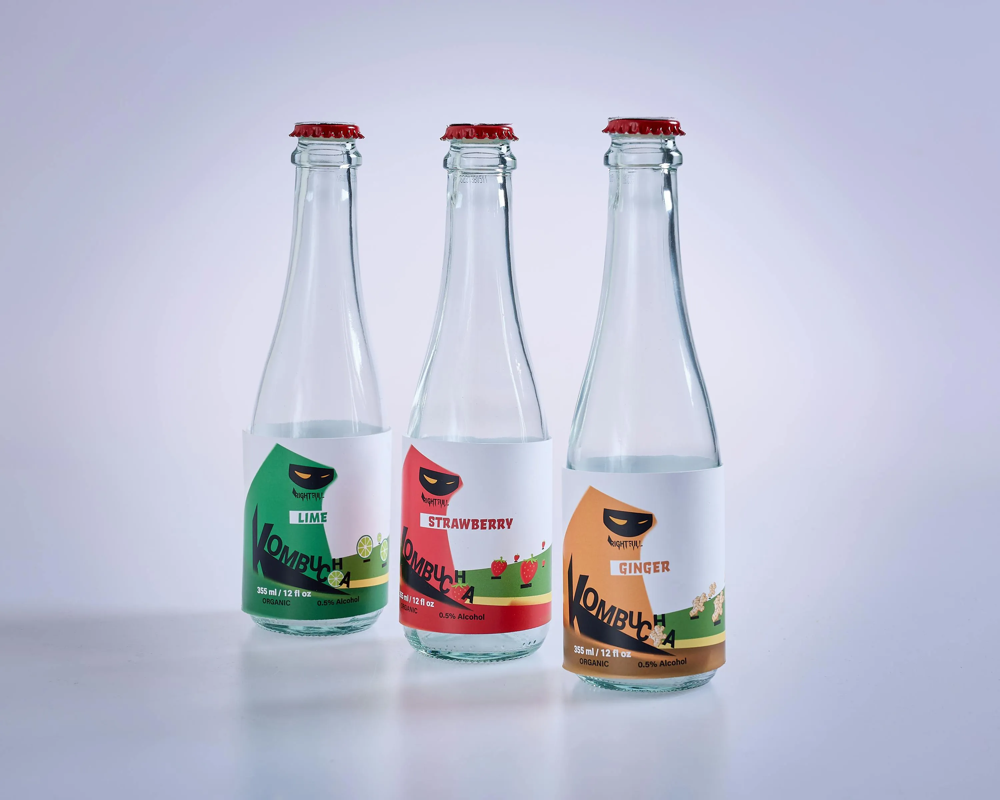

Trusted by leading organisations


Trusted by leading organisations



"Whether you're a startup building your brand identity or an established corporation running a national campaign, our team ensures every print is pixel-perfect — on time, every time. We proudly serve businesses across Nairobi, Mombasa, Kisumu, and all of Kenya. "
Whether you're a startup building your brand identity or an established corporation running a national campaign, our team ensures every print is pixel-perfect — on time, every time.
Large format digital printers, UV flatbeds, and precision finishing tools for flawless results.
Same-day to 48-hour delivery on most orders. Rush jobs handled with care and precision.
Our creatives craft print-ready artwork from scratch or refine your existing designs.



Two decades of delivering excellence. When your brand is on the line, you need a partner you can count on completely.
Calibrated CMYK workflows ensure your brand colours are reproduced faithfully, every time.
One copy or ten thousand — digital printing with zero minimums, equal care on every job.
We set realistic timelines and honour them. Rush orders handled without cutting corners.
Our in-house team ensures artwork is print-ready before a single sheet rolls through the press.
Everything you need to know — file formats, delivery, pricing, and how to place an order.
Talk to our team today — we'll quote you within the hour and get your project moving.